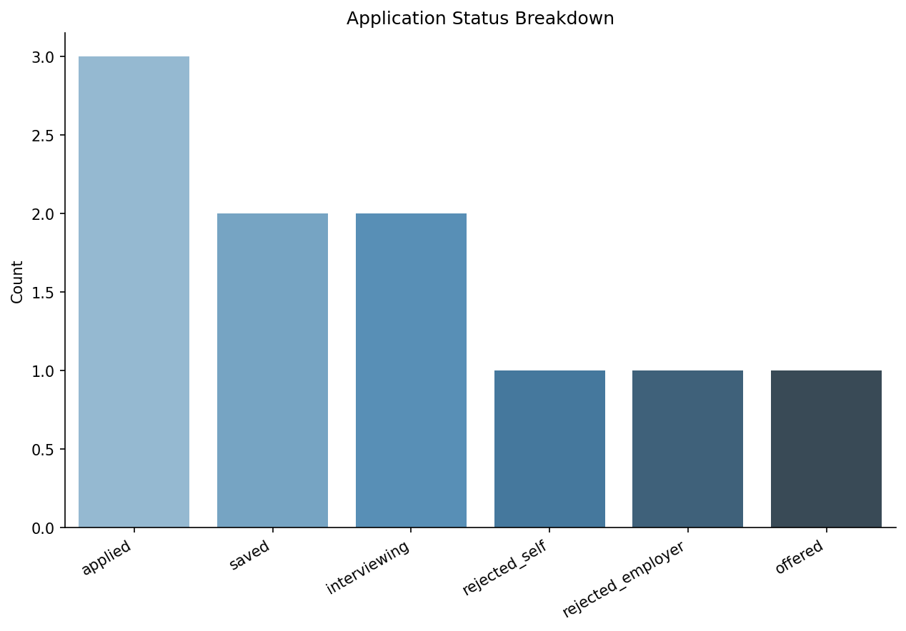
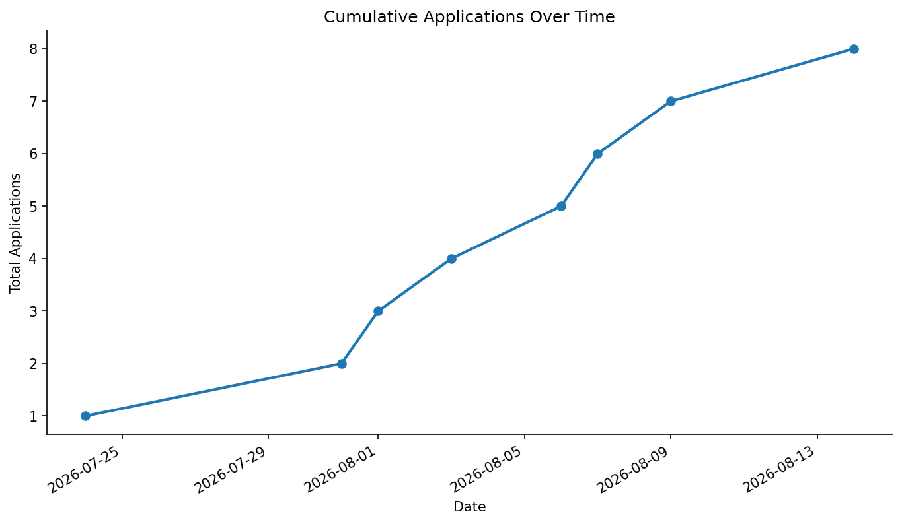
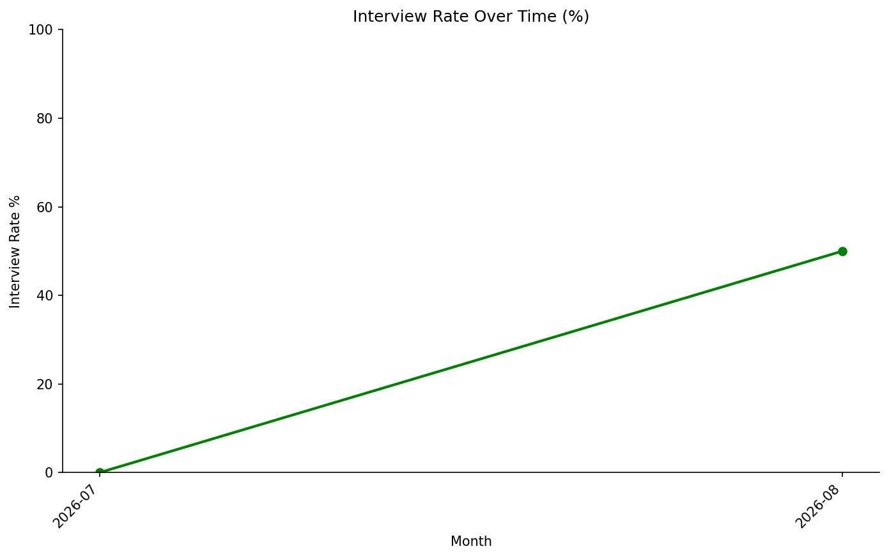
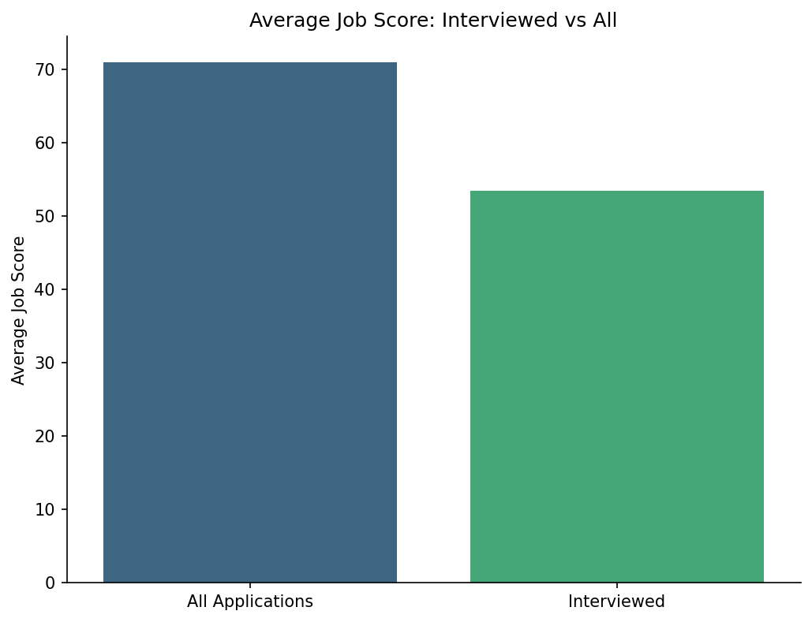
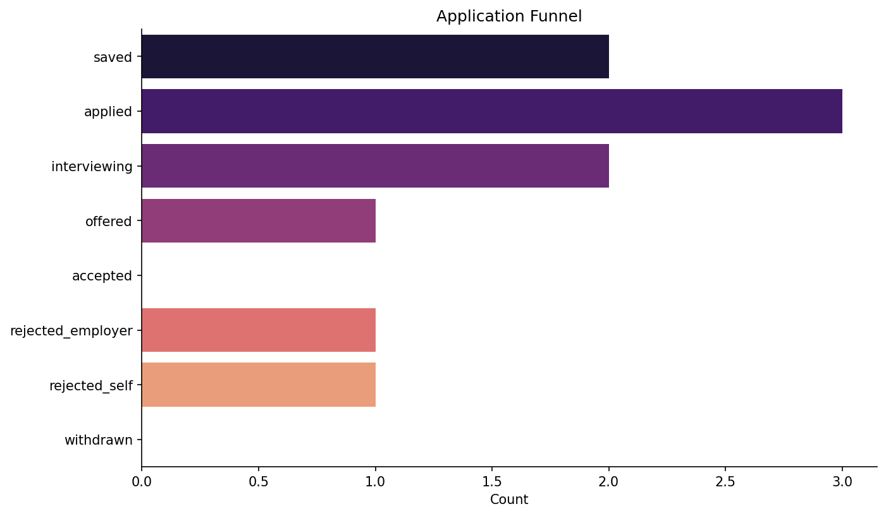

Stats
- Applications: 10
- Interviews: 3
- Offers: 1
- Average Job Score: 65.7
- Interview Rate: 30.0%
Charts





Highlights
Top Jobs
- Analytics Engineer @ Maple & Metric — 94.7
- Senior Data Analyst @ BeaverBite Analytics — 92.9
- BI Developer @ Lumen Food Tech — 91.0
- Junior Data Analyst @ Pawprint Pet Foods — 66.2
- Food Data Scientist @ Frosty Fork Labs — 62.0
Follow-ups Due
- Food Data Scientist @ Frosty Fork Labs — due 2026-07-31
- Analytics Engineer @ Maple & Metric — due 2026-08-07
- Business Intelligence Analyst @ Creekside Consumer Co — due 2026-08-11
- Junior Data Analyst @ Pawprint Pet Foods — due 2026-08-14
- Analytics Specialist @ Lumen Food Tech — due 2026-08-19